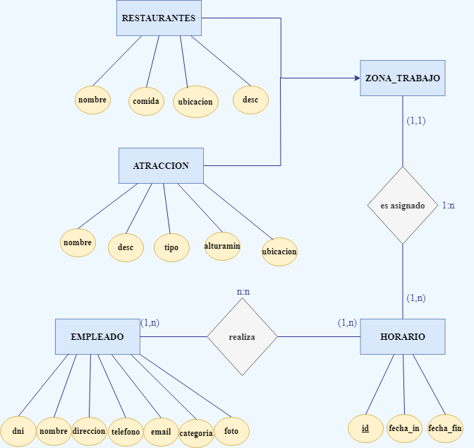

DOCUMENTACIÓN DEL PROYECTO
CONTEXTUALIZACIÓN
La aplicación ha sido desarrollada para facilitar la gestión de los horarios de los trabajadores del parque de atracciones Port Aventura para así dar solución a una necesidad del departamento de RRHH. El parque cuenta con diferentes zonas de trabajo clasificadas en dos tipos: atracciones y restaurantes. Todos los empleados están bajo la supervisión de RRHH, que necesita conocer datos básicos como el nombre del empleado, el correo electrónico, telefóno, clasificación del empleado y otros datos de interés.
Para gestionar los horarios, la aplicación permite la introducción de fechas y horas de entrada y salida que serán asignadas a una zona. Estos horarios pueden ser realizados por uno o varios empleados y tendrán una única zona asignada. Las zonas podrán tener muchos horarios asignados para cubrir todos los turnos que hay que realizar en esa área. De esta forma, los empleados de las diferentes zonas podrán visualizar sus horarios asignados.
Los responsables de cada área podrán asignar y modificar los horarios de su plantilla, así como añadir nuevos horarios y visualizarlos para así poder tener una visión completa de la planificación del parque.
BASE DE DATOS
Diagrama entidad-relación
Después de saber las necesidades del cliente, se presenta el diagrama de entidad relación.
Esquema lógico relacional
ATRACCION(nombre, descripción, tipo, alturaminima, ubicacion)
RESTAURANTE(nombre, tipoComida, ubicacion, descripción)
EMPLEADO(dni, nombre, direccion, telefono, email, categoría, foto)
HORARIO(id, fecha_inicio, fecha_fina, nombreAtr, nombreRes)
HORARIO.nombreRes es la clave aliena a RESTAURANTE.
HORARIO.nombreAtr es la clave aliena a ATRACCION
ASIGNACION(idHorario, idniEmpleado)
ASIGNACION.idHorario es la clave aliena a HORARIO.
ASIGNACION.dniEmpleado es la clave aliena a ATRACCION.
Enlace base de datos
Clica encima de la imagen para descargarte la base de datos para poderla importar en mySQL.

MODELO-VISTA-CONTROLADOR
Para crear el patrón MVC en mi proyecto, he organizado las diferentes partes de la siguiente manera:
En el modelo, he incluido todas las clases que tienen conexión a la base de datos MySQL. Las he nombrado de acuerdo al controlador correspondiente para facilitar su localización. Adjunto una imagen que muestra la estructura de organización.
En el controlador, he creado controladores individuales para cada vista de la aplicación. Cada clase controladora tiene el mismo nombre que su vista asociada. Además, he creado una carpeta llamada "clases" para incluir cada clase-objeto que se ha derivado del diagrama UML. En esta sección, me gustaría destacar que he creado una clase llamada "Zona" que tiene dos subclases: "Atraccion" y "Restaurante". Estas subclases no existen en el diagrama UML ni en la base de datos, pero me han ayudado a agrupar estos dos objetos de manera lógica.
Las vistas están ubicadas en la carpeta "resources", junto con las imágenes, los estilos CSS y una página web que he creado como manual de la aplicación.
CONCLUSIÓN
Durante el proceso del desarrollo de la aplicación se me han presentado diversos desafíos técnicos. Uno de los retos más importantes ha sido la elección y uso adecuado de los controles, como la implementación de especificaciones en CSS para la estética final de la app. Además, uno de los controles que quise incorporar y al final no realizé fue la implementación de un spinner para las horas y minutos, que después de muchas pruebas fue imposible incluirlo, incluso al haber implementado el código correctamente.
Asimismo, una de las tareas más complejas ha sido la vista de los empleados, ya que con el select de la base de datos he presentado dificultades para incluir todos los horarios de una persona asignazos a una zona, y que incluyera todos los datos con el método toString. Al tener dos tablas diferentes para zonas (Atracciones y Restaurantes), encontrar la lógica para agruparlos ha sido un desafío. Otro obstáculo ha sido la transformación de las fechas de MySQL a JavaFX y viceversa, ya que ha sido necesario extraer la fecha del datepicker y transformarla en un valor válido para MySQL.
Por otro lado, el control de errores ha sido crucial, especialmente en la pantalla de creación, donde ha sido necesario controlar varios errores y asociar un mensaje para cada uno de ellos, para que el usuario comprenda el error que está cometiendo y evitar la corrupción de la aplicación. A pesar de estas dificultades, el resultado final ha sido satisfactorio y profesional, y la aplicación da respuesta a las necesidades de empresas que buscan gestionar horarios cuando sus empleados rotan mucho y deben gestionarlos según los picos de trabajo existentes. Además, la aplicación ha surgido de una necesidad personal, al haber trabajado en una empresa multinacional que aún utilizaba hojas de Excel para la gestión de horarios.